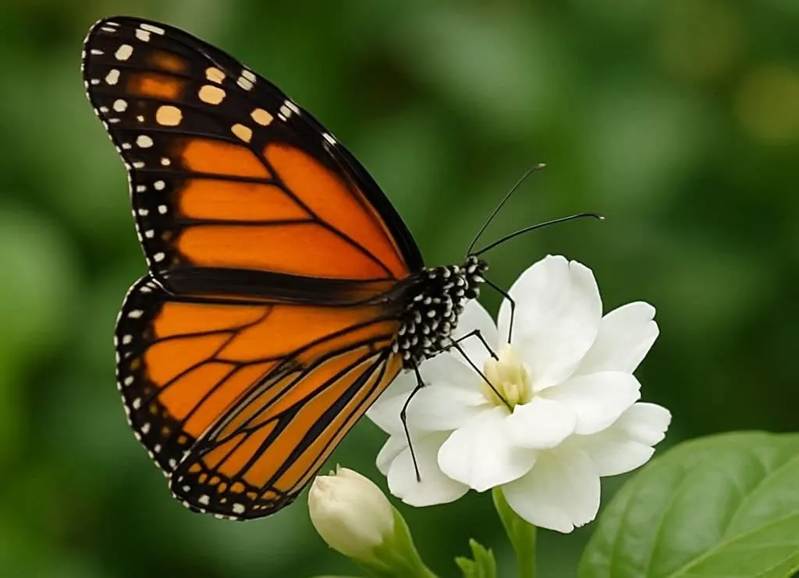

BUTTERFLIESThe Secret Language of Butterfly Wings
Butterfly wings are more than beautiful. Their colours, patterns and movements can help with camouflage, communication, temperature control and survival. Each wing is covered with thousands of tiny scales that create remarkable colours and patterns, helping butterflies adapt to their surroundings and communicate within the natural world.
Every butterfly carries a unique story across its wings. From delicate markings that confuse predators to vibrant colours used to attract a mate, these intricate patterns play an important role in everyday survival. A closer look reveals how beautifully butterflies have adapted to the environments they call home.
Read The Story